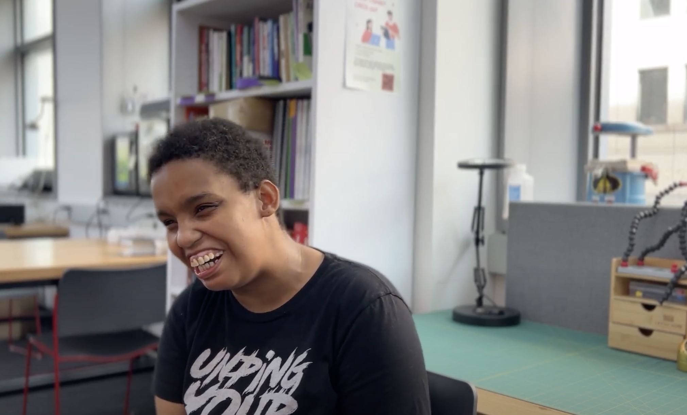

Assembler: I created an assembler to build a custom assembly language. This assembler translated machine code into assembly code based off a given functionality manual. This assembler ensured the machine code was being processed correctly and efficiently.
Simulator: Additionally, I developed a simulator that interprets assembly language, converting its directives into operational instructions. This process involves the precise evaluation of registers, enabling the system to execute commands and manage data effectively.
Cache: The simulator works in conjuction with a cache that efficiently retreived data. By employing a two-tier cache architecture, it ensures data is accessed swiftly and efficiently. This structure not only enhances performance but also minimizes latency, providing a seamless experience in data processing and utilization.
Instgram post schowcasing the 2023 Hack NYU event.
Instagram Post highlighting the VIP team.
Interview with mathematics professor Joseph Esposito.
Danielle Coles shares the story of her love of acting and how it has made her a stronger self advocate. She shares how she got into acting as well how her passion has guided her into a leadership role to inspire others. Her narrative is not only an inspiring testament to her resilience but also a resounding call to action for individuals everywhere to embrace their passions and potential. (click photo to view video)
